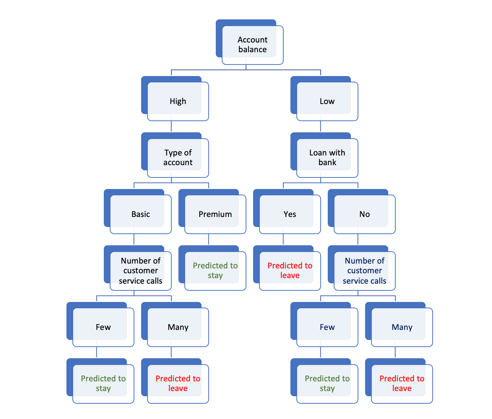

Decision trees and random forests
Decision trees
A decision tree is a simple machine learning algorithm consisting of a set of flowchart-like nodes representing decisions, which are based on a variable’s value, and branches representing the outcomes of those decisions, which lead to either a subsequent node/decision or a final prediction. We can think of a decision tree as a series of “questions” we ask the data. Based on the answers, the algorithm makes decisions or predictions.
The following illustrates a very simple decision tree for predicting whether bank customers will remain with their bank throughout the next year.

This tree illustrates, starting on the right side, that if a customer has a low balance and a loan with the bank, they’re likely considering leaving, possibly due to financial constraints. However, if they have a low balance but no loan, the deciding factor might be their interaction with customer service. Many calls could indicate dissatisfaction, making them likely to leave. On the left side of the tree, we see that customers with medium to high balances are further segmented based on account type. Those with basic accounts who have had many interactions with customer service are predicted to leave. However, those with premium accounts are predicted to stay.
With real data, the decisions made at the various nodes in a decision tree are based on a a measure of “split quality.” The exact process depends on the algorithm used, but here’s a general outline of how decisions are made at the nodes using the popular CART (Classification And Regression Trees) approach:
Selection of node variables: For each predictor, the algorithm evaluates its ability to distinguish between outcomes = 1 and outcomes = 0. This distinction is usually measured using impurity scores, such as Gini impurity or entropy. The predictor variable that provides the best separation is selected as the node variable.
Determining the splits: For each potential predictor variable, the algorithm assesses every possible threshold or category. If it’s a categorical predictor (e.g., low balance: yes or no), it directly checks the separation created by this category. If it’s a continuous predictor (e.g., account balance amount), it might consider every unique value or use binning techniques to determine the best split point. The threshold or category that gives the most distinct separation (least impurity) is chosen as the split.
Iterative process: After choosing the best variable and its split, the data is divided accordingly, resulting in two child nodes. This process is recursively applied to each child node until a stopping criterion is reached, like a maximum tree depth or a minimum number of samples in a node.
Pruning (for some DT algorithms): After the tree is fully grown, it can be pruned to remove branches that have little importance or add little predictive power. This is done to simplify the model and improve its performance on unseen data.
In essence, the decisions made at each node are data-driven, aiming to improve the prediction accuracy (or reduce error) of the tree. The tree-building process aims to find the splits that most effectively segregate the data in terms of the target outcome.
Random forests
A random forest considers many different possible decision trees. A bootstrap sample (a random sample of the units (rows), with replacement) is taken from the data, and a decision tree is constructed. Then, this process is repeated many times, resulting in many different possible decision trees.
When growing each tree, instead of considering all features for splitting at a node, only a random subset of the predictors is considered. This introduces variability and helps “de-correlate the trees,” making the model more robust.
To aggregate results across all the trees in the forest, the algorithm takes an “ensemble” approach. For regression (including for predicting probabilities of a binary outcome), the average prediction of all the individual trees is the final prediction. For classification, the class (i.e., yes or no, 0 or 1) that gets the most votes from all the individual trees is the final prediction (majority voting).
The combination of diverse trees reduces the variance (overfitting) without increasing the bias, leading to a more accurate and robust model compared to a single decision tree.
Tuning parameters for Random Forest: There are many tuning parameters for the Random Forest algorithm. While not a comprehensive list, some of the key tuning parameters include:
Number of trees (\(B\)): chosen to be sufficiently large so that results are stable. \(B\)=500 is the default in the code templates.
Number of predictors to consider at each node (\(m\)). One rule of thumb is \(m=\sqrt(p)\) where \(p\) is the total number of predictors.
Minimum node size. This is the minimum number of observations that can be in a terminal node. For the code templates the default is 10.
Maximum tree depth. This limits tree complexity. The code templates do not constrain tree depth for random forests.
Advantages of Random Forest
Performance: Because Random Forest takes an ensemble approach - by aggregating across multiple trees (bagging), the algorithm reduces variance and buffers against overfitting. Because Random Forest tends to be much less prone to overfitting than individual decision trees, it is recommended over using individual decision trees.
Flexibility: The Random Forest algorithm works well for classification and regression. It also works well with categorical and continuous predictors. Also, it does not require transforming predictors values (e.g. mean centering or scaling). Moreover, it does not require the data analyst to specify a functional form of the relationship between predictors and the outcome and therefore excels over regression methods that assume linear relationships.
Detects interactions: The Random Forest algorithm inherently captures interactions between variables without the data scientist needing to explicitly specify them. Moreover, Random Foriest can capture not only 2-way interactions, but also 3-way or higher interactions, as well as non-linear interactions between variables, which might be missed or hard to model in traditional regression techniques.
Handles large data sets: The algorithm can handle large datasets efficiently. The sampling technique ensures that it can scale well with the increase in data.
Disadvantages of Random Forest
Computationally Intensive: Training a Random Forest can be time-consuming, especially on large datasets, and depending on the number of trees.
Interpretability: Individual decision trees, with their hierarchical structure, can be visualized and interpreted easily. However, Random Forest, being an ensemble of multiple trees, lacks this level of interpretability. “Variable importance” methods, which we will turn to later, can give some insights, however.
Tuning Required: While Random Forest can perform reasonably well with default parameters, to get the most out of the algorithm, hyperparameter tuning is often required, which can be time-consuming.